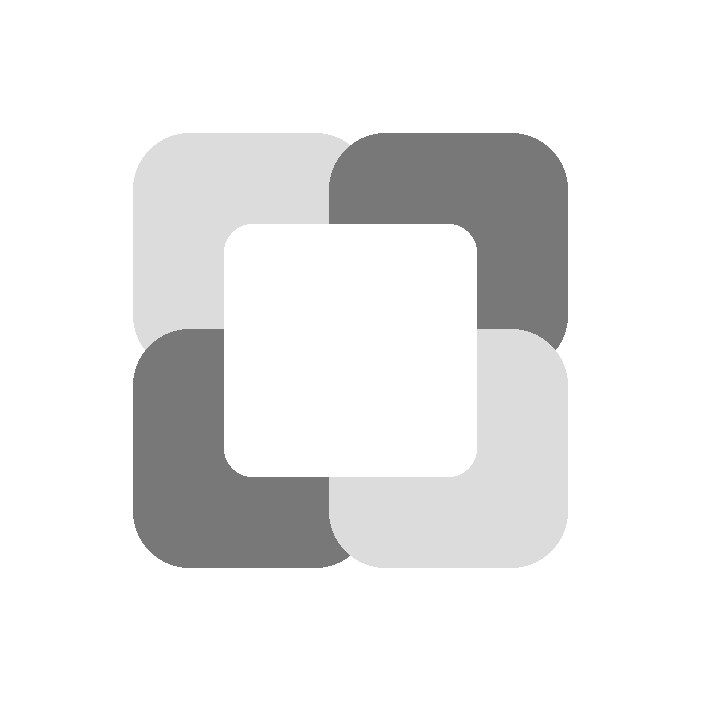
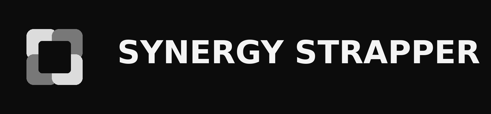

Instalación y actualizaciones
Instala y actualiza Roblox Player y Studio desde un único bootstrapper, con releases distribuidas directamente desde GitHub.

SYNERGY STRAPPERBootstrapper alternativo para Roblox
Synergy Strapper reúne instalación, actualización y configuración de Roblox Player y Studio en una experiencia de escritorio clara y configurable.
Windows 10 o posterior · Distribución oficial en GitHub Releases
Capacidades
02Las herramientas están organizadas por tarea para que la configuración siga siendo entendible, reversible y fácil de revisar.
Instala y actualiza Roblox Player y Studio desde un único bootstrapper, con releases distribuidas directamente desde GitHub.
Gestiona apariencia, bootstrapper, atajos, integraciones, canales y preferencias globales desde su propia ventana de ajustes.
Revisa configuraciones y usa perfiles nombrados para guardar, cargar, fusionar o sustituir los FastFlags de forma explícita.

Diseñado para ser legible
El objetivo no es ocultar opciones tras automatismos. Es reunirlas en un sitio predecible, con acciones directas y contexto antes de cada cambio.
Abrir guía de primeros pasosDocumentación
Una referencia breve y útil para instalar, actualizar, configurar y resolver dudas sin buscar entre mensajes antiguos.
Explorar la wikiReleases oficiales
Descarga Synergy Strapper únicamente desde los assets publicados en el repositorio oficial de GitHub.
Ir a la última releasePLATAFORMAWINDOWS 10+
ARQUITECTURAWIN-X64
CANALGITHUB RELEASES